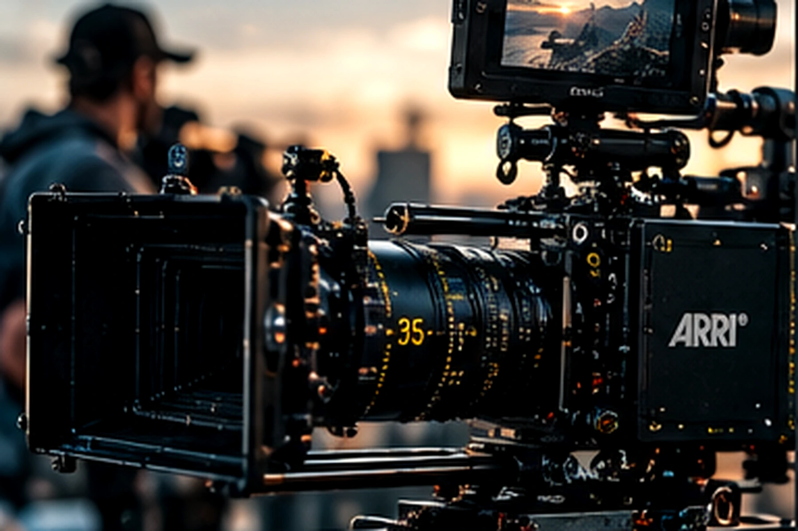
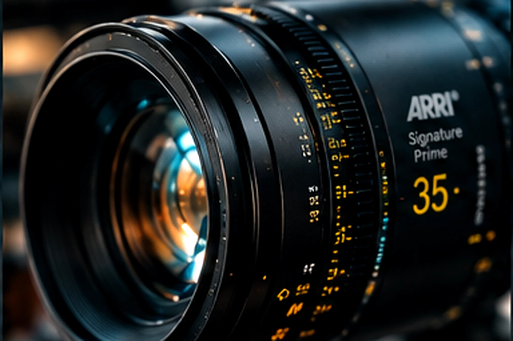
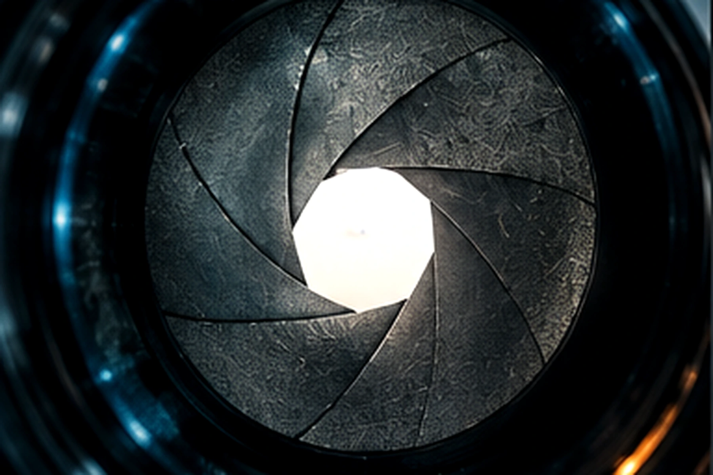
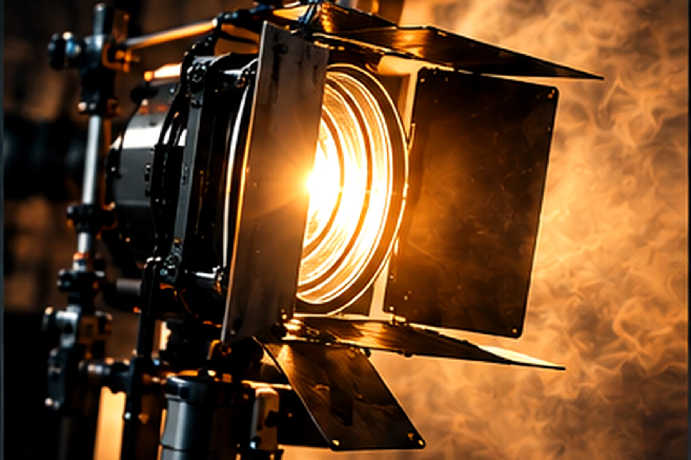
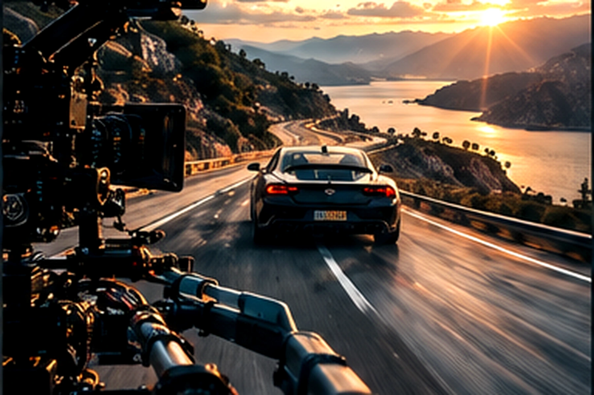
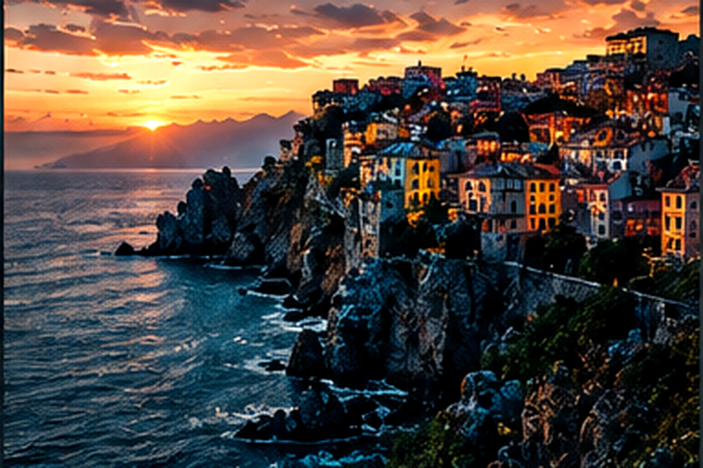
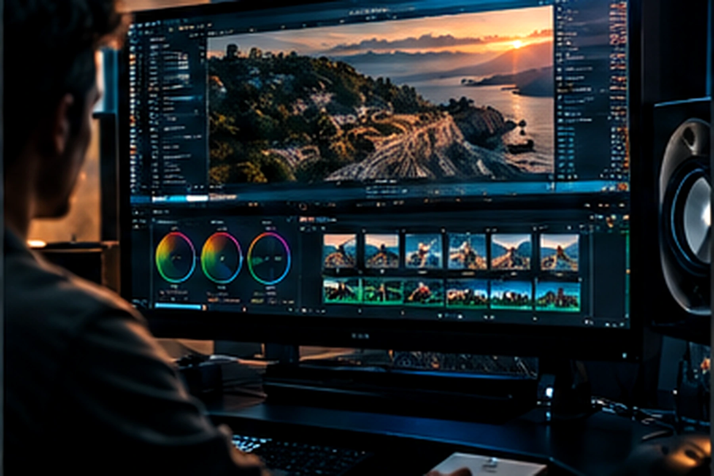
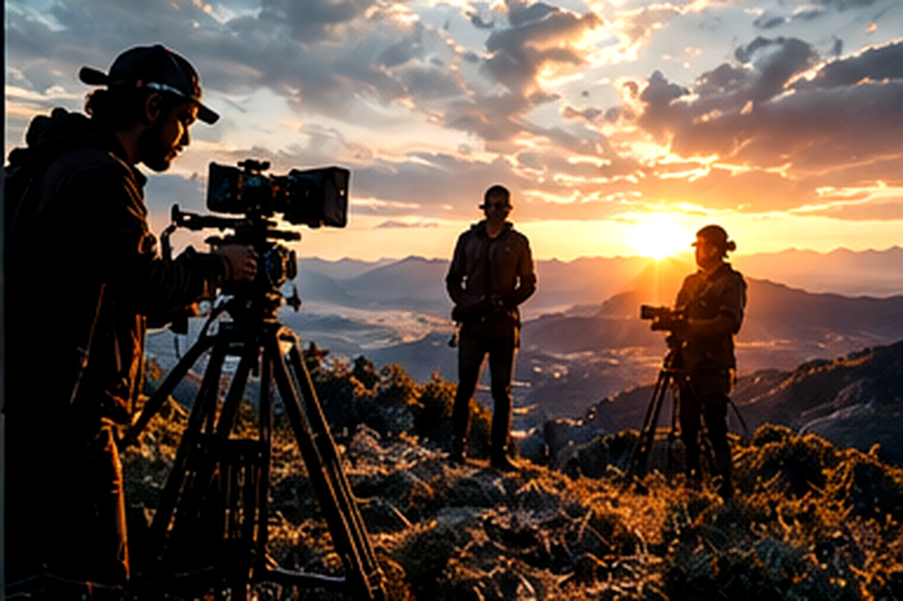

GUIA TÉCNICO · ED. 2026
CONTROLE
A IMAGEM
ANTES DO
PROMPT.
Uma linguagem técnica para transformar intenção visual em instrução precisa — para geração de imagem e vídeo por IA.
CÂMERAARRI ALEXA 35
SUPER 35 · 17 STOPS
SUPER 35 · 17 STOPS
LENTECOOKE SPEED PANCHRO
T1.4 · PRIME
T1.4 · PRIME
PLANOCLOSE-UP
INTIMIDADE
INTIMIDADE
ABERTURAf/1.4
PROFUNDIDADE RASA
PROFUNDIDADE RASA
LUZLOW KEY
CONTRASTE
CONTRASTE
01 / 08
02 / 08
O GUIA TÉCNICO
12 CAPÍTULOS
UMA LINGUAGEM.
01—12 / SISTEMA SHOT
Do equipamento ao prompt. Câmera, lente, enquadramento, luz, movimento, composição, cor, formato, combinações e catálogo — organizados em uma única linguagem cinematográfica.
12 CAPÍTULOS
01 / 12







03 / 08
12 CAPÍTULOS
DO PARÂMETRO
AO MÉTODO.
01—12 / ESTRUTURA DO GUIA
O SHOT começa na decisão técnica e termina na instrução. Cada capítulo acrescenta uma camada à linguagem até formar um método completo para imagem e vídeo.
01CÂMERAsensor · resolução · textura
02LENTEflare · distorção · caráter
03ÂNGULOposição · perspectiva · poder
04ENQUADRAMENTOquanto do sujeito aparece
05ABERTURAf-stop · luz · profundidade
06LUZclima · contraste · atmosfera
07MOVIMENTO46 movimentos catalogados
08COMPOSIÇÃOregra dos terços · simetria · linhas
09COR / GRADINGmood · contraste · saturação
10PROPORÇÃO2.39:1 · 16:9 · 9:16
11COMBINAÇÕESreceitas cruzando 7 parâmetros
12CATÁLOGOprompts prontos para copiar
04 / 08
EXCLUSIVO PARA VÍDEO
46 MOVIMENTOS.
UMA CÂMERA VIVA.
Do Static Shot ao FPV. Pan, Tilt, Zoom, Dolly, Tracking, Orbit, Crane, Drone e movimentos especiais — organizados em categorias técnicas.
STATIC
→
DOLLY
→
TRACKING
→
ORBIT
→
FPV
7 CATEGORIAS TÉCNICASIMG + VIDED. 2026
05 / 08
COMBINAÇÕES / 07 RECEITAS
SETE DECISÕES.
UMA LINGUAGEM.
COMO USAR
Escolha uma receita e veja como Câmera, Lente, Ângulo, Enquadramento, Abertura, Luz e Movimento se encaixam em um único SHOT.
06 / 08
CATÁLOGO DE PROMPTS
DA REFERÊNCIA
À INSTRUÇÃO.
IMG + VID / ESTRUTURA
Estruturas prontas para transformar uma referência visual em instrução técnica — com linguagem pensada para geração de imagem e vídeo.
IMG
IMAGEM
[câmera], [lente], [ângulo], [enquadramento], [abertura], [luz], [composição], [cor], [proporção] + cenaVID
VÍDEO
[câmera], [lente], [enquadramento], [luz] + [movimento] + sujeito + ambiente + ritmoIMG + VID
COMPATIBILIDADE
Midjourney · Stable Diffusion · Flux · Ideogram · Nano Banana 2 · Imagen 4 · Seedream · GPT-Image · Runway · Kling · Sora · Veo 307 / 08
08 / 08
O MÉTODO SHOT
CÂMERA + LENTE + ÂNGULO+ ENQUADRAMENTO + ABERTURA+ LUZ + MOVIMENTO = SHOT
Sete parâmetros técnicos, uma linguagem só. Domine cada um separadamente e combine-os conforme a cena que você imagina.
RECEBER O SHOT →O QUE VOCÊ RECEBE
UM SISTEMA
PARA PENSAR
IMAGENS.
Guia técnico completo + catálogo de prompts prontos para geração de imagem e vídeo por Inteligência Artificial.
COMO RECEBER →